seaborn.violinplot#
- seaborn.violinplot(data=None, *, x=None, y=None, hue=None, order=None, hue_order=None, orient=None, color=None, palette=None, saturation=0.75, fill=True, inner='box', split=False, width=0.8, dodge='auto', gap=0, linewidth=None, linecolor='auto', cut=2, gridsize=100, bw_method='scott', bw_adjust=1, density_norm='area', common_norm=False, hue_norm=None, formatter=None, log_scale=None, native_scale=False, legend='auto', scale=<deprecated>, scale_hue=<deprecated>, bw=<deprecated>, inner_kws=None, ax=None, **kwargs)#
Draw a patch representing a KDE and add observations or box plot statistics.
A violin plot plays a similar role as a box-and-whisker plot. It shows the distribution of data points after grouping by one (or more) variables. Unlike a box plot, each violin is drawn using a kernel density estimate of the underlying distribution.
See the tutorial for more information.
Note
By default, this function treats one of the variables as categorical and draws data at ordinal positions (0, 1, … n) on the relevant axis. As of version 0.13.0, this can be disabled by setting
native_scale=True.- Parameters:
- dataDataFrame, Series, dict, array, or list of arrays
Dataset for plotting. If
xandyare absent, this is interpreted as wide-form. Otherwise it is expected to be long-form.- x, y, huenames of variables in
dataor vector data Inputs for plotting long-form data. See examples for interpretation.
- order, hue_orderlists of strings
Order to plot the categorical levels in; otherwise the levels are inferred from the data objects.
- orient“v” | “h” | “x” | “y”
Orientation of the plot (vertical or horizontal). This is usually inferred based on the type of the input variables, but it can be used to resolve ambiguity when both
xandyare numeric or when plotting wide-form data.Changed in version v0.13.0: Added ‘x’/’y’ as options, equivalent to ‘v’/’h’.
- colormatplotlib color
Single color for the elements in the plot.
- palettepalette name, list, or dict
Colors to use for the different levels of the
huevariable. Should be something that can be interpreted bycolor_palette(), or a dictionary mapping hue levels to matplotlib colors.- saturationfloat
Proportion of the original saturation to draw fill colors in. Large patches often look better with desaturated colors, but set this to
1if you want the colors to perfectly match the input values.- fillbool
If True, use a solid patch. Otherwise, draw as line art.
New in version v0.13.0.
- inner{“box”, “quart”, “point”, “stick”, None}
Representation of the data in the violin interior. One of the following:
"box": draw a miniature box-and-whisker plot"quart": show the quartiles of the data"point"or"stick": show each observation
- splitbool
Show an un-mirrored distribution, alternating sides when using
hue.Changed in version v0.13.0: Previously, this option required a
huevariable with exactly two levels.- widthfloat
Width allotted to each element on the orient axis. When
native_scale=True, it is relative to the minimum distance between two values in the native scale.- dodge“auto” or bool
When hue mapping is used, whether elements should be narrowed and shifted along the orient axis to eliminate overlap. If
"auto", set toTruewhen the orient variable is crossed with the categorical variable orFalseotherwise.Changed in version 0.13.0: Added
"auto"mode as a new default.- gapfloat
Shrink on the orient axis by this factor to add a gap between dodged elements.
New in version 0.13.0.
- linewidthfloat
Width of the lines that frame the plot elements.
- linecolorcolor
Color to use for line elements, when
fillis True.New in version v0.13.0.
- cutfloat
Distance, in units of bandwidth, to extend the density past extreme datapoints. Set to 0 to limit the violin within the data range.
- gridsizeint
Number of points in the discrete grid used to evaluate the KDE.
- bw_method{“scott”, “silverman”, float}
Either the name of a reference rule or the scale factor to use when computing the kernel bandwidth. The actual kernel size will be determined by multiplying the scale factor by the standard deviation of the data within each group.
New in version v0.13.0.
- bw_adjust: float
Factor that scales the bandwidth to use more or less smoothing.
New in version v0.13.0.
- density_norm{“area”, “count”, “width”}
Method that normalizes each density to determine the violin’s width. If
area, each violin will have the same area. Ifcount, the width will be proportional to the number of observations. Ifwidth, each violin will have the same width.New in version v0.13.0.
- common_normbool
When
True, normalize the density across all violins.New in version v0.13.0.
- hue_normtuple or
matplotlib.colors.Normalizeobject Normalization in data units for colormap applied to the
huevariable when it is numeric. Not relevant ifhueis categorical.New in version v0.12.0.
- formattercallable
Function for converting categorical data into strings. Affects both grouping and tick labels.
New in version v0.13.0.
- log_scalebool or number, or pair of bools or numbers
Set axis scale(s) to log. A single value sets the data axis for any numeric axes in the plot. A pair of values sets each axis independently. Numeric values are interpreted as the desired base (default 10). When
NoneorFalse, seaborn defers to the existing Axes scale.New in version v0.13.0.
- native_scalebool
When True, numeric or datetime values on the categorical axis will maintain their original scaling rather than being converted to fixed indices.
New in version v0.13.0.
- legend“auto”, “brief”, “full”, or False
How to draw the legend. If “brief”, numeric
hueandsizevariables will be represented with a sample of evenly spaced values. If “full”, every group will get an entry in the legend. If “auto”, choose between brief or full representation based on number of levels. IfFalse, no legend data is added and no legend is drawn.New in version v0.13.0.
- scale{“area”, “count”, “width”}
Deprecated since version v0.13.0: See
density_norm.- scale_huebool
Deprecated since version v0.13.0: See
common_norm.- bw{‘scott’, ‘silverman’, float}
Deprecated since version v0.13.0: See
bw_methodandbw_adjust.- inner_kwsdict of key, value mappings
Keyword arguments for the “inner” plot, passed to one of:
matplotlib.collections.LineCollection(withinner="stick")matplotlib.axes.Axes.scatter()(withinner="point")matplotlib.axes.Axes.plot()(withinner="quart"orinner="box")
Additionally, with
inner="box", the keywordsbox_width,whis_width, andmarkerreceive special handling for the components of the “box” plot.New in version v0.13.0.
- axmatplotlib Axes
Axes object to draw the plot onto, otherwise uses the current Axes.
- kwargskey, value mappings
Keyword arguments for the violin patches, passsed through to
matplotlib.axes.Axes.fill_between().
- Returns:
- axmatplotlib Axes
Returns the Axes object with the plot drawn onto it.
See also
boxplotA traditional box-and-whisker plot with a similar API.
stripplotA scatterplot where one variable is categorical. Can be used in conjunction with other plots to show each observation.
swarmplotA categorical scatterplot where the points do not overlap. Can be used with other plots to show each observation.
catplotCombine a categorical plot with a
FacetGrid.
Examples
The default violinplot represents a distribution two ways: a patch showing a symmetric kernel density estimate (KDE), and the quartiles / whiskers of a box plot:
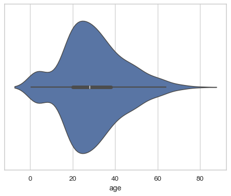df = sns.load_dataset("titanic") sns.violinplot(x=df["age"])
In a bivariate plot, one of the variables will “group” so that multiple violins are drawn:
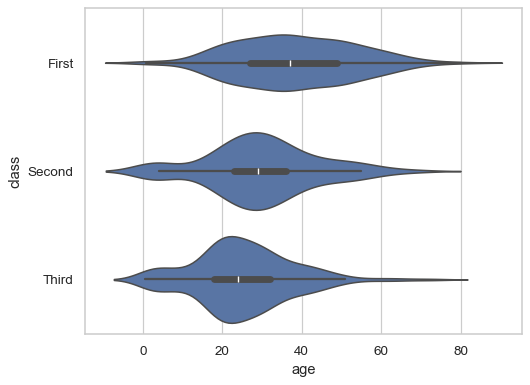sns.violinplot(data=df, x="age", y="class")
By default, the orientation of the plot is determined by the variable types, preferring to group by a categorical variable:
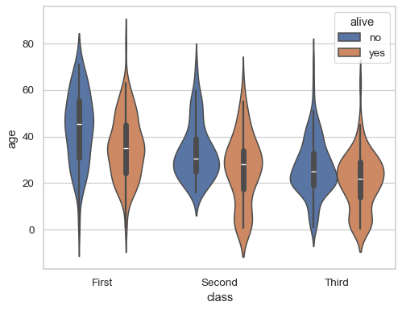sns.violinplot(data=df, x="class", y="age", hue="alive")
Pass
fill=Falseto draw line-art violins: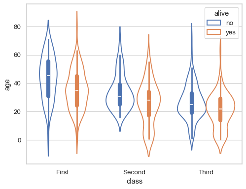sns.violinplot(data=df, x="class", y="age", hue="alive", fill=False)
Draw “split” violins to take up less space, and only show the data quarties:
sns.violinplot(data=df, x="class", y="age", hue="alive", split=True, inner="quart")

Add a small gap between the dodged violins:
sns.violinplot(data=df, x="class", y="age", hue="alive", split=True, gap=.1, inner="quart")

Starting in version 0.13.0, it is possilbe to “split” single violins:
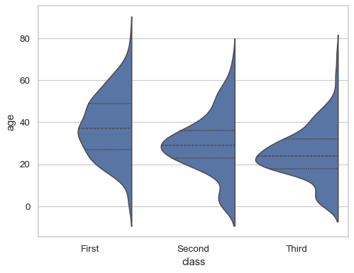sns.violinplot(data=df, x="class", y="age", split=True, inner="quart")
Represent every observation inside the distribution by setting
inner="stick"orinner="point":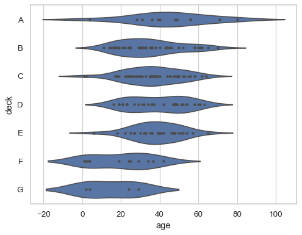sns.violinplot(data=df, x="age", y="deck", inner="point")
Normalize the width of each violin to represent the number of observations:
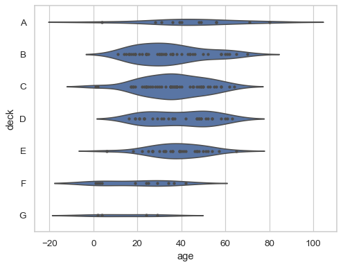sns.violinplot(data=df, x="age", y="deck", inner="point", density_norm="count")
By default, the KDE will smooth past the extremes of the observed data; set
cut=0to prevent this: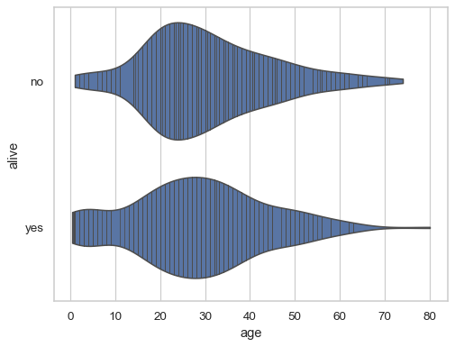sns.violinplot(data=df, x="age", y="alive", cut=0, inner="stick")
The
bw_adjustparameter controls the amount of smoothing: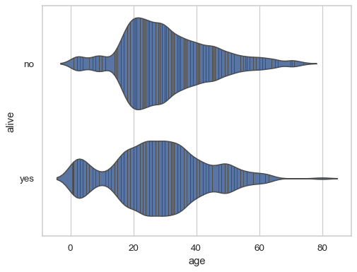sns.violinplot(data=df, x="age", y="alive", bw_adjust=.5, inner="stick")
By default, the violins are drawn at fixed positions on a categorical scale, even if the grouping variable is numeric. Starting in version 0.13.0, pass the
native_scale=Trueparameter to preserve the original scale on both axes:sns.violinplot(x=df["age"].round(-1) + 5, y=df["fare"], native_scale=True)

When using a categorical scale, the
formatterparameter accepts a function that defines categories: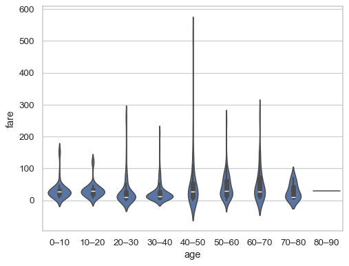decades = lambda x: f"{int(x)}–{int(x + 10)}" sns.violinplot(x=df["age"].round(-1), y=df["fare"], formatter=decades)
By default, the “inner” representation scales with the
linewidthandlinecolorparameters:sns.violinplot(data=df, x="age", linewidth=1, linecolor="k")
Use
inner_kwsto pass parameters directly to the inner plotting functions: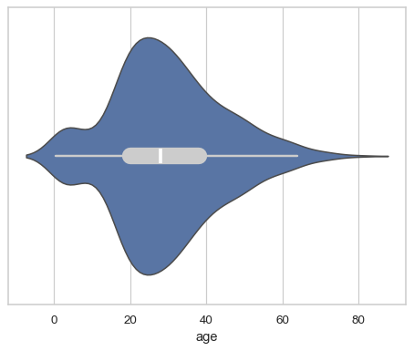sns.violinplot(data=df, x="age", inner_kws=dict(box_width=15, whis_width=2, color=".8"))